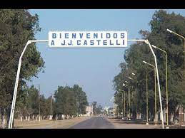
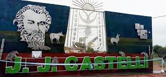
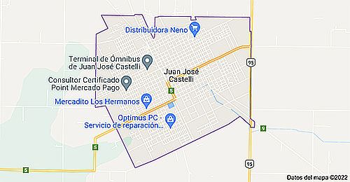
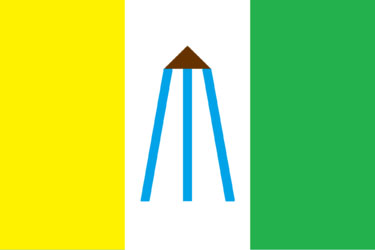

Fundación Amigos del Arte y Turismo


Juan José Castelli, coloquialmente Castelli, es una ciudad ubicada en el noroeste de la provincia del Chaco, Argentina. Es la cabecera del departamento General Güemes. Ubicada a pocos kilómetros de la ciudad de Presidencia Roque Sáenz Peña, sobre la ruta nacional 95, fue considerada durante muchos años como el " Portal del Impenetrable".

La Fundación Amigos del Arte y Turismo, con Personería Jurídica Nº452/14 es una Entidad no lucrativa, con el fin de vincular las expresiones culturales de la región, la idiosincrasia de la gente y el turismo a través del ARTE.
Nuestra meta es promover el Arte y el Turismo, rescatando, revalorizando e incluyendo todas las manifestaciones artísticas y culturales, en salvaguarda de nuestra identidad, y en defensa del medio ambiente.
Geográficamente ubicados en el Departamento General Güemes de la provincia del Chaco, en la Puerta del Impenetrable, con una comunidad integrada por pueblos originarios de distintas etnias, criollos y descendientes de inmigrantes de distintos países de Europa.
Nos reconocemos como parte de “El Impenetrable”, su cultura y su gente. Por eso, buscamos dar a conocer nuestra región, su riqueza, sus leyendas, su arte y su poesía, que invitan a recorrer lugares como la FIDELIDAD, MISIÓN NUEVA POMPEYA, LA CANGAYÉ, LAS RUINAS DEL Km 71 que nos hablan de nuestra historia y nuestra gente.

Mapa : Juan José Castelli - Chaco
 .
Bandera de Juan José Castelli, presentada oficialmente el 8 de agosto de 2014.